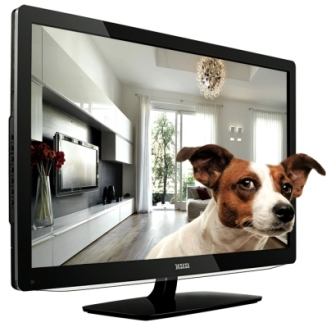
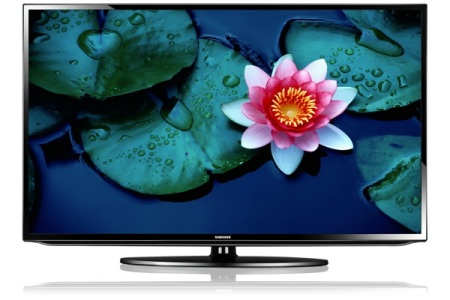
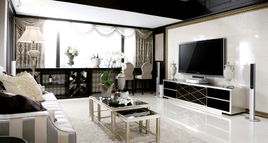

О технологии LED в современных телевизорах.

В основе LED-технологии лежит использование светодиодов (с англ. lightemittingdiode - LED), которые преобразуют электрический ток в световое излучение. За счет этого изображение получается более ярким, а цвета - насыщеннее.
В отличие от предыдущих моделей, в частности от LCD, LED-телевизоры потребляют меньше электроэнергии.
К тому же новинки в процессе работы меньше нагреваются, поэтому не так требовательны к условиям монтажа.

Для новой технологии характерен высокий уровень контрастности, обеспечивающий высокую детализацию при передаче изображения. Глубокий черный цвет делает картинку на экране четче и ярче.
Использование светодиодов позволяет значительно
уменьшить толщину корпуса телевизора. Ультратонкий дизайн, а также три типа настенного крепления (картинный, наклонный и поворотный) позволяют установить технику в любом удобном положении для комфортного просмотра.
Размер экрана LED-телевизоров - от 32 до 55 дюймов, поэтому для каждой комнаты можно подобрать идеальный вариант. Для домашнего кинотеатра телевизор можно подключить к компьютеру, если нужно купить компьютер в Солигорске
посмотрите на
интернет-магазине soligorsk.cooler.by и вы найдете много интересных предложений по приятной цене.

Читайте также:
3D видео без очков.Технология будущего.
Следующая статья:
Новая Windows 8.